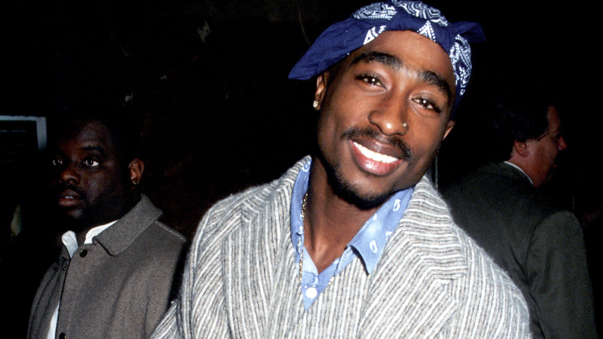

Tupac Shakur, a highly successful American hip hop artist, was fatally shot on September 7, 1996, in a drive-by shooting in Las Vegas, Nevada. It is claimed that he didn’t succumb to gunshot wounds sustained in a drive-by shooting on the Las Vegas Strip on 13 September 1996, but escaped to Cuba, and has been laughing at us ever since.